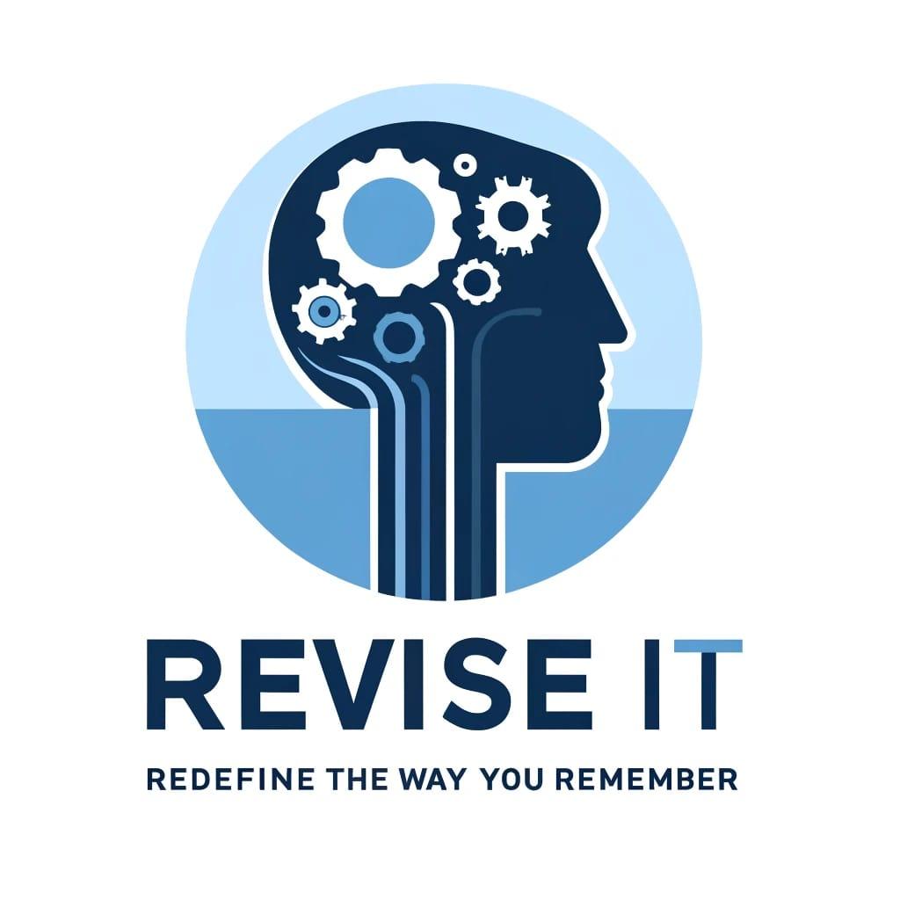

    
    <footer class="footer" role="contentinfo" itemscope itemtype="http://schema.org/WPFooter">
    <div class="footer-left" itemscope itemtype="http://schema.org/Organization" class="h-card">
        
        <h3 itemprop="name" class="p-name">Reviseit</h3>
        <nav aria-label="Footer Navigation">
            <p class="footer-links" >
               ReviseIt is an innovative platform dedicated to enhancing student learning by providing easy access to recorded college lectures. Our mission is to empower students to revisit and revise their classes anytime, anywhere, ensuring better understanding and retention of concepts. With ReviseIt, learning extends beyond the classroom, tailored exclusively for your college community.
            </p>
        </nav>
        <p class="footer-name">
            Reviseit © 2024</p>
    </div>

    <div class="footer-center">
        <div itemscope itemtype="http://schema.org/PostalAddress" class="p-address">
            <i class="fa fa-map-marker" aria-hidden="true"></i>
            <p>
                <span itemprop="streetAddress" class="p-street-address">UMIYA Emporium</span>,
                <span itemprop="addressLocality" class="p-locality">Tavarekere</span>,
                <span itemprop="addressRegion" class="p-region">Bengaluru</span>,
                <span itemprop="postalCode" class="p-postal-code">560029</span>
            </p>
        </div>
        <div>
            <i class="fa fa-phone" aria-hidden="true"></i>
           <p itemprop="telephone" class="p-tel">
    <a href="tel:+916383634873">+91 6383634873</a>
</p>

        </div>
        <div>
            <i class="fa fa-envelope" aria-hidden="true"></i>
            <p><a href="mailto:info@OnceAgain.in" itemprop="email" class="u-email">info@Reviseit.in</a></p>
        </div>
    </div>

    <div class="footer-right">
        <p class="footer-about">
            <span>About this site</span>
ReviseIt offers recorded college lectures to help students revisit classes anytime, enhancing understanding and retention. Tailored for college communities, it makes learning flexible and accessible.        </p>
        <div class="footer-socials">
            <a href="#" rel="me" aria-label="Facebook" itemprop="sameAs" class="u-url"><i class="fa-brands fa-facebook"></i></a>
            <a href="#" rel="me" aria-label="Twitter" itemprop="sameAs" class="u-url"><i class="fa-brands fa-x-twitter"></i></a>
            <a href="#" rel="me" aria-label="LinkedIn" itemprop="sameAs" class="u-url"><i class="fa-brands fa-linkedin"></i></a>
        </div>
    </div>
</footer>